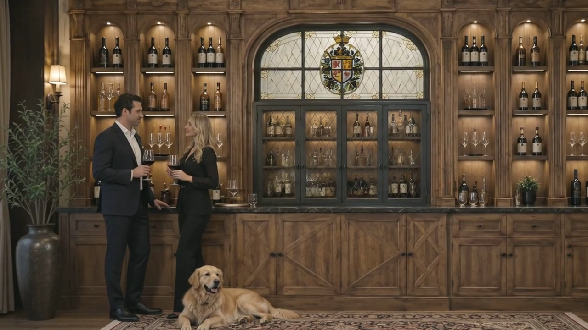

Review Clip
Cinematic presentation preview
One short clip with a cleaner crop and calmer color balance, designed to show the room mood and presentation value clearly.

The goal is to outline what Lesly can deliver for One Off: clearer client visuals, stronger approval moments, motion previews, and a calmer path from project request to confident decisions.
The goal is to help the client understand the proposed bar-window direction before final fabrication details are locked: overall mood, room presence, closed-window read, material direction, and motion value.
This review turns technical source material into a clearer client conversation. Fabrication decisions stay with verified drawings and shop documentation; the presentation gives a guided view of scale, atmosphere, movement, finish direction, and unresolved details.

"A technical drawing explains construction. A strong visualization helps people understand the design before the finished piece exists."
Strategic positioningThe value is not only the finished image. It is the path from rough inputs to a clear review, with visual decisions separated from fabrication details.
Review drawings, notes, references, space context, mechanism risks, and the details the client may misunderstand.
Clarify mood, scale, movement, finish direction, scope, and open questions.
Organize visuals, notes, decisions, and next steps into one polished review surface instead of a scattered file thread.
Keep final dimensions, hardware, finish samples, lattice/infill, and fabrication details tied to confirmed source documents.
Use the review response to decide which visuals, dimensions, mechanism details, or finish assumptions need another pass.
The visual direction suggests a warm private-bar atmosphere while staying clear that final finishes, glass/infill, and fabrication details require technical confirmation.

A still, source sketch, motion clip, or review page should clarify something specific: mood, scale, movement, finish direction, technical concern, or presentation status.
Shows presence, warmth, and the intended private-room atmosphere.

Clarifies symmetry, overall proportions, and the composed bar-window face.
Shows how depth, finish mood, and surrounding millwork can be discussed together.
Keeps the arched transom, four lower panels, and drawing logic visible in the review.

Shows how the commission could feel in use, without replacing technical confirmation.

Adds a calm reveal layer once the still direction is worth showing in motion.
A short clip can add atmosphere and reveal the object in context, but it should follow the agreed still direction so motion does not hide unresolved design decisions.
One short clip with a cleaner crop and calmer color balance, designed to show the room mood and presentation value clearly.
"This shows the intended mood, scale, finish direction, and presence of the bar cabinet before final fabrication details are locked."
"This review layer makes the commission easier to discuss before final detailing."
"This does not replace shop drawings. It supports them by keeping presentation language separate from build documentation."
Important: concept visuals support discussion. Final dimensions, hardware details, lattice/infill, and finish samples require verified technical approval.
The goal is a client review that is easier to understand: concept visuals, source notes, motion preview, and technical boundaries kept in their proper places.
Use this review to choose what should be refined next: closed-front read, open/closed movement, material direction, source drawing alignment, or client presentation format.